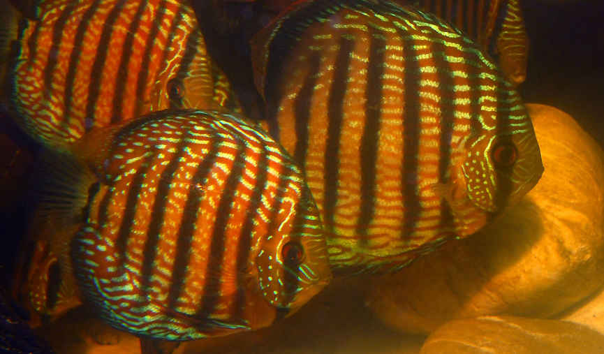
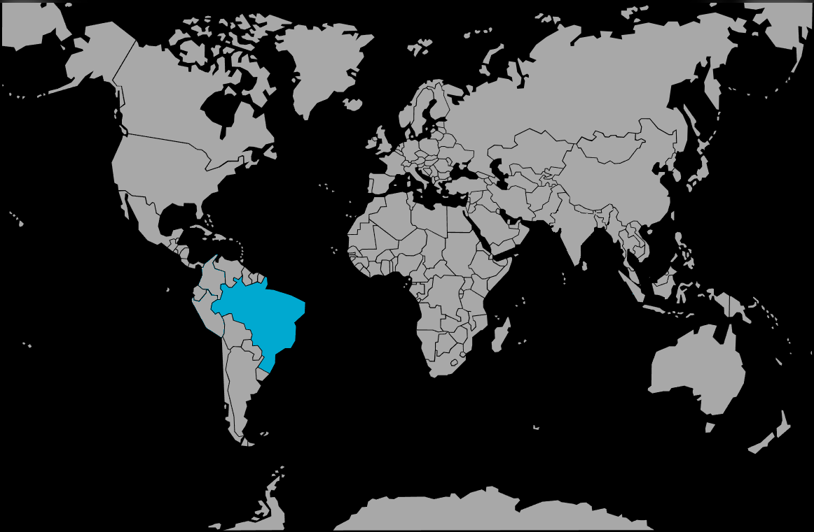

Systématique
- Ordre : Cichliformes
- Famille : Cichlidae
- Genre : Symphysodon
- Espèce : S. haroldi

Symphysodon haroldi, décrit par Schultz en 1960, est une espèce de Discus occupant les régions centrales et orientales du bassin amazonien. Bien que souvent confondu avec S. aequifasciatus, il s'en distingue par son patron de coloration qui présente des stries longitudinales bleues ou turquoises plus larges et plus régulières, couvrant souvent la totalité des flancs sur un fond brun à bleuâtre.
La silhouette est discoïde, typique du genre, avec une taille adulte pouvant atteindre 15 à 18 cm. Contrairement à S. tarzoo, il ne présente pas de points rouges distincts sur les flancs, mais plutôt un réseau de lignes horizontales irisées (appelées vermiculures). Les neuf barres verticales sombres sont d'intensité égale, sans prédominance de la barre centrale.
Scientifiquement, S. haroldi représente les populations de Discus dits "Bleus" ou "Bruns" du centre-est de l'Amazonie. Les analyses phylogéographiques indiquent que ces populations ont divergé des autres espèces suite à l'isolement dans des affluents spécifiques lors des cycles glaciaires du Pléistocène.
Symphysodon haroldi est un poisson social, vivant en groupes structurés. En milieu sauvage, il occupe les zones littorales calmes des rivières, se réfugiant dans les dédales de racines immergées (les "galhadas"). Ces structures lui offrent une protection contre les prédateurs comme les piranhas ou les caïmans.
Il est légèrement moins craintif que S. discus mais nécessite tout de même un groupe de congénères pour se rassurer. La communication entre individus passe par des signaux visuels (inclinaison du corps, déploiement des nageoires) et par le changement d'intensité de ses barres verticales, qui s'assombrissent en cas de stress ou de défense territoriale.
Mode : Ovipare, pondeur sur substrat vertical avec nourrissage trophique par mucus cutané.
Le processus de reproduction est identique aux autres membres du genre. Le couple défend un territoire de ponte et nettoie un support. Après la fertilisation, les parents surveillent les œufs, les aérant par des mouvements de nageoires pectorales.
À la nage libre, les alevins se nourrissent de la sécrétion cutanée parentale. Cette symbiose trophique est indispensable. Les deux parents participent activement à l'élevage, le mâle prenant souvent le relais de la femelle lorsque celle-ci doit se nourrir. La réussite de la reproduction est très dépendante de la stabilité physico-chimique de l'eau.
Dimorphisme sexuel : Difficile à observer en dehors de la période de frai. Les mâles ont tendance à être plus massifs avec une bosse nucale parfois plus marquée à maturité. L'extrémité des nageoires dorsale et anale peut être plus effilée. L'identification finale repose sur la forme des papilles génitales.
Espérance de vie : 10 à 12 ans en aquarium si les paramètres sont maintenus avec rigueur.
On trouve S. haroldi principalement dans les eaux claires (clearwater) et les eaux mixtes de l'Amazonie centrale. Contrairement aux eaux noires du Rio Negro, ces eaux ont une conductivité légèrement supérieure et une transparence plus élevée, bien qu'elles restent très douces et acides.
Son habitat est composé de zones de forêts inondées saisonnièrement. Le courant y est quasi inexistant. La végétation environnante fournit une ombre constante et un apport régulier de litière de feuilles et de fruits, qui constituent la base de la chaîne alimentaire de son écosystème.
Répartition

Origine naturelle :
- Amérique du Sud : Brésil (Amazonie centrale et orientale).
- Bassins versants : Rio Madeira, Rio Tapajós, Rio Tocantins et cours inférieur de l'Amazone.
- Rive sud de l'Amazone principalement.
C'est l'espèce de Discus dont l'aire de répartition est la plus étendue, ce qui explique la grande variété de formes chromatiques observées.
Paramètres de maintenance
Température : 27 à 30 °C.
pH : 5,5 à 7,0 (moins restrictif que S. discus).
GH : 2 à 8 °dGH.
Courant : Faible ; nécessite une filtration biologique performante en raison de la sensibilité aux nitrates.
Volume conseillé : Minimum 400 litres pour un groupe social (6-8 individus). Bac spacieux et bien planté avec des racines de mangrove.
Régime alimentaire
Régime : Omnivore.
Se nourrit de petits invertébrés, de larves d'insectes, de crustacés et d'une part non négligeable de végétaux et de détritus organiques (périphyton).
En aquarium, accepte les nourritures industrielles de qualité, mais exige des compléments congelés (artémias, mysis) et végétaux (spiruline) pour maintenir son système immunitaire et ses couleurs.